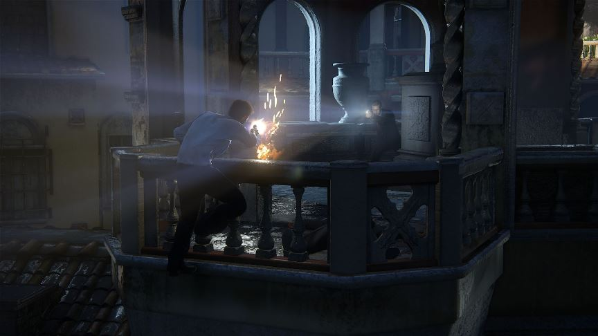
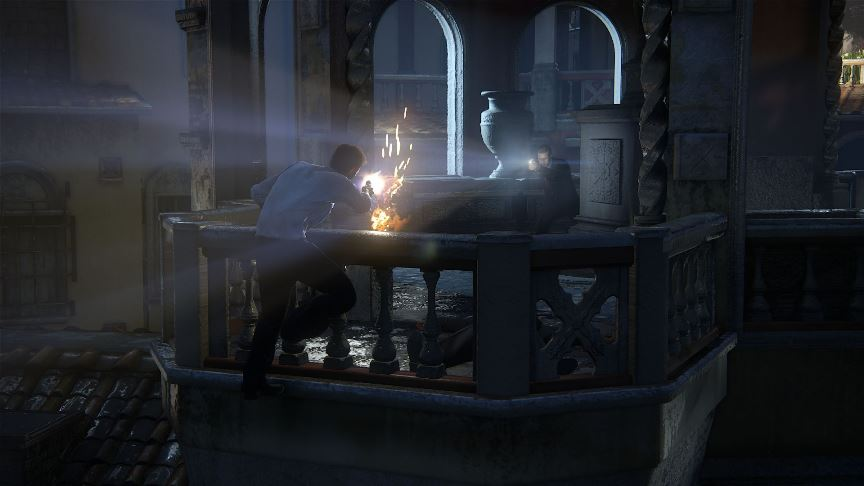

Uncharted 4
Uncharted 4: A Thief's End — пригодницька відеогра з видом від третьої особи, розроблена студією Naughty Dog і видана Sony Interactive Entertainment ексклюзивно для ігрової консолі Sony PlayStation 4. Є продовженням гри Uncharted 3: Drake's Deception і завершальною частиною пригод Нейтана Дрейка.
Ігровий процес
Uncharted 4: A Thief's End - пригодницький екшн від третьої особи з елементами тривимірного платформера. Протягом більшої частини гри під управлінням гравця знаходиться один персонаж - Нейтан Дрейк. В арсеналі Нейта з'явилася мотузка з гаком, за допомогою якої, зачепившись можна долати великі прірви і підтягувати до себе різні об'єкти, а також спеціальний гак, що дозволяє забиратися по високим скелях в певних місцях. В ході своєї подорожі Дрейк веде щоденник, в якому зберігаються знайдені листи і містяться підказки до головоломок.
Сюжет
Дія прологу розгортається за 15 років до основних подій гри, а також до подій першої частини серії. Нейтан Дрейк знаходиться зі своїм братом Семом і спільником Рейфом Адлером в панамської в'язниці. У камері Нейт знаходить хрест Святого Дісмас, в порожнині якого, на думку героїв, повинна знаходитися карта із зазначенням місцезнаходження скарбів Генрі Евері, однак хрест був зламаний, а карта в ньому була відсутня. Сем пропонує продовжити пошуки скарбів в Шотландії, де розташований собор Святого Дісмас і де втрачається слід Евері.
Розробка
14 листопада 2013 року був показаний тізер нової частини Uncharted, що розробляється ексклюзивно для PS4. Uncharted 4: A Thief's End — пригодницька відеогра з видом від третьої особи, розроблена студією Naughty Dog і видана Sony Interactive Entertainment ексклюзивно для ігрової консолі Sony PlayStation 4.4 грудня 2016 на заході PlayStation Experience 2016 відбувся анонс спін-офф гри, Uncharted: The Lost Legacy, де головними героями є Хлоя Фрейзер і Надін Рос
Нагороди
За підсумками виставки E3 2015 Uncharted 4 був визнаний кращою консольної грою, кращої пригодницької грою, а також отримав спеціальний приз за графіком. 5 травня 2016 року компанія Sony зняла ембарго на публікацію оглядів. Гра отримала високі оцінки і схвальні відгуки від ЗМІ, які висвітлюють ігрову індустрію. На сайті-зібранні Metacritic.com гра має середній бал, рівний 93 з 100, грунтуючись на 112 оглядах, 110 з яких позитивні, 1 змішаний і 1 негативний.
Головні персонажі
Нейтон
Сем
Віктор
Елена
Ральф
Надін
 
